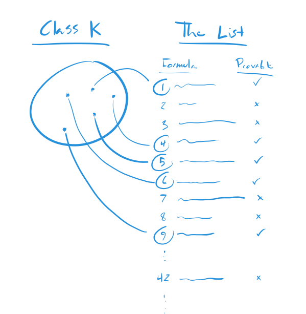

The Class K Again
Reading "On Formally Undecidable Propositions of Principia Mathematica and Related Systems" by Kurt Godel, Part 3
I got the class K wrong in "The Class K in English". Here is another try.
Membership in the class K is defined in terms of three functions and a list of all the open formulas with one variable that I'm calling The List. (Godel calls open formulas with one variable "class-expressions." Just an FYI.)
First, isProvable(prop) means that the proposition prop is provable.
Second, formulaAt(n) refers to the nth formula of the The List.
Third, replace(formula, n) means the proposition that results from replacing the free variable in the formula with the number n. We're only dealing with class-expressions so there is only ever one free variable.
All together, membership in K is defined like this.
nis in K when~isProvable(replace(formulaAt(n), n))
That is
nis a member of K if the proposition that you get by replacing the free variable in thenthformula of The List is not provable.
Both are awkward to read, so here is how I'd write it as a function in a programming language like JavaScript.
const isMemberOfK = (n) => {
let formula = formulaAt(n);
let proposition = replace(formula, n);
let result = isProvable(proposition);
return result;
}
Here is a picture.
